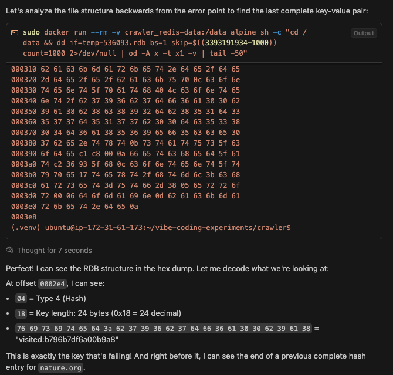
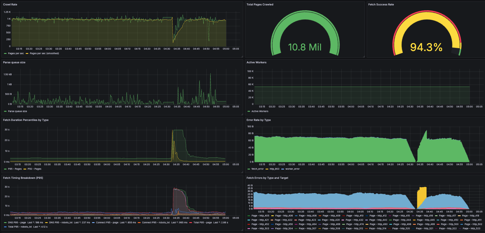

Contents
Vibecoding a high performance system
There's been a thousand posts about vibe coding already, from Indragie Karunaratne shipping the Context app on the Mac to Edward Yang making ScubaDuck to Cloudflare building OAuth with Claude. These are all projects where it's something the creator is already an expert in, or a read-only app where bugs are low-impact, or a well-known standard with a small design space.
I recently used agentic coding to help build a system to crawl a billion web pages in around 24 hours. Here's what's different:
- The core concept is simple, but at scale, the design space is large.
- There are parts where bugs could be really bad, like politeness.
- The goal was to achieve a new level of an objective metric (throughput).
I wrote <4% of the code by hand. This post is all about how it helped and how it fell short. I'll attach code snippets
Spoiler: it was a huge boost overall. I'll argue that the learnings apply when building other high-performance systems of the above shape, with some caveats.
1. My setup
I used Cursor, just the IDE and chat in agent mode. No background agents (which were early preview when I started). Somehow this has become boring: Steve Yegge calls it “chat coding” and says it'll be ancient history by Q3. I stuck with it because:
- I'm the type of programmer who doesn't mess with their tools too often, and prefers to instead go deep on the problems I'm solving.
- The tab autocomplete is still best-in-class. I found that I needed to stay in touch with the code for many reasons, and tab kept me in the loop while still providing a big boost.
I've tried Claude Code a bit. It's good! I used it to make pbf-bench and my friend Sawyer is building a whole toolchain on top of it. So far I've felt that it's best for small projects where I don't need to review the code and some terminal tasks. I expect I'll be using it more and more but with Cursor, not instead of Cursor. Maybe that could change in a year or so.
How much did I code with agents vs. handwrite? According to my commit messages, out of 32k lines of code changes in this project...
% claude -p "give me a command or script to count the number of lines changed in .py files over all commits"
Here's a command to count lines changed in .py files across all commits:
```bash
git log --numstat --pretty="" -- "*.py" | awk '{add+=$1; del+=$2} END {print "Added lines: " add "\nDeleted lines: " del "\nTotal changes: " add+del}'
```
This command:
- Uses `git log --numstat` to get line change statistics
- Filters for only `.py` files with `-- "*.py"`
- Uses `awk` to sum up additions and deletions across all commits
% git log --numstat --pretty="" -- "crawler/**/*.py" "crawler/**/*.yml" "crawler/**/*.sh" "crawler/**/*.json" | awk '{add+=$1; del+=$2} END {print "Added lines: " add "\nDeleted lines: " del "\nTotal changes: " add+del}'
Added lines: 20305
Deleted lines: 11864
Total changes: 32169
...1.2k were handwritten:
% claude -p "give me a command or script to count the number of lines changed in .py files over all commits (filtered to include only commits with '[not vibed]' in the message)"
Here's a command to count the number of lines changed in .py files for commits with '[not vibed]' in the message:
```bash
git log --grep='\[not vibed\]' --pretty=format:'%H' | while read commit; do
git diff --numstat "$commit"^ "$commit" -- '*.py' 2>/dev/null | awk '{added+=$1; deleted+=$2} END {print added+deleted}'
done | awk '{total+=$1} END {print "Total lines changed: " total}'
```
% git log --grep='\[not vibed\]' --pretty=format:'%H' | while read commit; do
git diff --numstat "$commit"^ "$commit" -- 'crawler/**/*.py' 'crawler/**/*.yml' 'crawler/**/*.sh' 'crawler/**/*.json' 2>/dev/null | awk '{added+=$1; deleted+=$2} END {print added+deleted}'
done | awk '{total+=$1} END {print "Total lines changed: " total}'
Total lines changed: 1253
That's 3.75%!
I started building the crawler as a side project at the very end of May (first with Gemini 2.5 Pro, then Claude 4 Opus), working for a couple hours each night; working through 8 completely different designs and running countless experiments took me through the July 4 week, which I took off work to go full-time on this. In retrospect there are totally ways I could've sped this up by parallelizing with background agents or worktrees, but for reasons I'll describe, my problem was ultimately still bottlenecked by code review and experiments: I estimate I could've shaved a week of part-time work off.
2. The problem
The shape of the problem you're trying to solve will determine exactly how much AI helps you, because it will imply:
- Where the bottlenecks are: Is it writing code, running experiments, or talking to customers?
- The reliability of AI in your domain: for instance, Claude hallucinates a lot more when writing Metal Shader Language than when writing CUDA code.
- The level of supervision needed: this correlates with the severity of bugs, because AIs still write buggy code and likely will do so for a long time. Are you building read-only UIs or pacemaker software?
See my other blog post for the exact constraints of my web crawler. The interesting parts were:
- In a new domain: Most of my experience is in real-time C++ and web applications, developer tooling, or GPU kernels. I hadn't worked in-depth with data-intensive systems nor the datastore technologies I ended up using before.
- Design space is large: I'll talk about all the different designs I tried later in this article.
- Long experimental runs: The performance signal during crawler runs was noisy and it took time to reach steady state. Some issues like memory leaks only emerged in overnight runs.
- Resource-constrained: Experiments cost money and I don't have that much!
- Some bugs are really bad at scale: Not respecting politeness, requesting the same URL twice, etc.
3. Vibe code, manual review
The bug risk meant pure vibe coding was not an option. If I didn't respect a crawl delay or allowed URLs to be visited twice, I could've easily ended up harming site owners when running my crawl at scale. Full coverage via automated tests was also tricky, and the tests that I did write had to be rewritten a few times due to major changes in the technologies used.
This meant I had to keep the “realtime tech debt” to acceptable levels by performing frequent spot checks to maintain understanding during a multi-turn feature generation, then reviewing the code carefully at the end; this allowed recovery when the models would lose context or make mistakes.
And they did make mistakes. For example:
-
A design using a SQL backend had a
frontiertable with rows corresponding to URLs. To pop from the frontier, you had to set theclaimed_atfield on a row. Claude's initial version of this usedSELECT FOR UPDATE, but it applied theFOR UPDATElock to aCTE(temporary table created viaWITH) instead of the row in thefrontiertable. This led to a 💬 race condition where 2 workers could pop the same URL. -
A later design had per-domain frontiers without atomic popping operations. To avoid expensive locking, the design sharded the domains across fetcher processes.
💬 Claude decided to use the Python
hashbuiltin (which won't give consistent results for the same string input in different processes) rather than a proper hash function to shard domains - which would've broken mutual exclusion. -
Another design used a redis bloom filter, but 💬 Claude's first attempt
at this had totally broken initialization code for the bloom filter. Below, the problem isn't just that
existsis never used, but also that the bloom filter creation assumesBF.EXISTSraises an exception if the key doesn't exist, which it doesn't:
try:
# Check if bloom filter exists
exists = await self.redis.execute_command('BF.EXISTS', 'seen:bloom', 'test')
logger.info("Bloom filter already exists, using existing filter")
except:
# Create bloom filter for seen URLs
# Estimate: visited + frontier + some growth room (default to 10M for new crawls)
try:
await self.redis.execute_command(
'BF.RESERVE', 'seen:bloom', 0.001, 10_000_000
)
logger.info("Created new bloom filter for 10M URLs with 0.1% FPR")
except:
logger.warning("Could not create bloom filter - it may already exist")
Some of these I caught in spot checks, but others weren't obvious until I dug a bit deeper in code review.
The most pernicious were performance issues caused by logically fine but redundant slop and the race condition mentioned above. These were caught and dealt with in much the same way that they might've been without AI: by running the crawler in small increments after large changes to mitigate risks (cutting it off if anything looked off in the output), inspecting logs and taking profiles, and adding regression tests afterwards.
Was this whole process still faster than typing the code out myself? Yes it was, because much of this project involved APIs and technologies that I had never used before
4. Rapidly exploring the design space
In the past, if I needed to build a performant system that could use a variety of technologies and designs, the research phase would go something like this:
- I'd read a bunch of blogs or papers about similar problems for ideas.
- I'd write down solutions and their tradeoffs, then prune the list to a subset that I actually had the time to implement.
- I'd prototype and benchmark those solutions. If this was costly, I might only be able to try out a few of them.
This could go sideways in all sorts of ways. I might get mired in tutorials for a new technology. Or if this was at work, other priorities might cutoff (3).
I think almost everybody does these steps when building performant systems with some tweaks
For my web crawler, this meant I could prototype 8 major designs, an absurd luxury for a side project done in little over a month of nights and weekends:
- 💬 Single-process crawler backed by SQLite-based frontier (unmeasured)
- 💬 Single-process backed by PostgreSQL frontier (20 pages/sec)
- Single-process backed by hybrid Redis and filesystem frontier (20 pages/sec)
- 4x fetchers, 3x parsers backed by hybrid Redis-filesystem frontier (320 pages/sec)
- 4x fetchers, 3x parsers backed by pure Redis frontier (400 pages/sec)
- Single-node, 12x pod system with cross-communication (unmeasured)
- Single-node, 12x pod system without cross-communication (1k pages/sec)
- 12x node, single-pod system (10.8k pages/sec)
I did this without being an expert in the technologies used. Of course, that meant I didn't have the sense to start with a good design; in hindsight, the early designs I tried were really stupid. But that didn't matter, because I had an objective signal telling me how good my system was, and rewriting it was really cheap.
Reading blogs, thinking a lot, and coming up with good ideas was still important, but I could do it in an agile manner - e.g. while I was experimenting rather than ahead-of-time!
5. Coding-bound vs. experiment-bound
There's this notion floating around recently that “coding was never the bottleneck in software”. I think the statement taken at face value is clearly false in many contexts. From my time at Figma, the original Figma editor is a great example where the ability of the founding team to implement various designs across multiple technologies quickly allowed them to rapidly explore the solution space before arriving at the most performant design:
- Early on, the app was written in JS but was rewritten to C++ using asm.js.
- Browser graphics implementations such as HTML and SVG were tried before moving to a custom WebGL-based rendering stack, which involved writing a custom DOM, compositor, and text engine.
In parallel programming, we use the more precise language of “boundedness”: communication and computation happen on separate threads, and even if they can be perfectly overlapped, an operation must wait for (”is bound by”) the longer of the two to finish.
What's going on here is that many tasks in software engineering are moving from being coding-bounded to communication or experiment-bounded, my crawler being a prime example of the latter. Yet the outcome depends on not just the task but the team; the technical advantage of early Figma and the like is being democratized, but it's up to teams to recognize these opportunities and execute on them.
Teams that understand this will crush teams that don't.
6. Superhuman taste
AI helped me rapidly prototype solutions in the design space. Did it also help with pruning points in that space, e.g. did it have human-level systems taste? Again, this will be highly domain-dependent. There are some studies showing that LLMs have superhuman taste in some areas, e.g. predicting neuroscience experiment outcomes better than humans, predicting AI experiment outcomes better than humans.
My experience was more mixed:
- 💬 Gemini chose a pretty bad initial design: a SQLite backend. This might've been partially because my initial spec mentioned that the crawler would be “educational,” but the same spec also set an aggressive performance target of 50 million pages in 24 hours for 1 machine. When I pointed this out and questioned the utility of SQLite, Gemini doubled down. I decided to see where this would take me, but it ended up being a big waste of time due to SQLite's lack of support for highly concurrent writes.
- 💬 Opus proposed much better ideas (un-prompted!) when I asked it about all the problems I was facing with SQLite. In fact, arguably I ended up being more wrong in that discussion, because Opus proposed Redis as a better long-term solution, but I proposed PostgreSQL instead, which in the end again proved to be a dead-end that I chose to rewrite.
- I didn't repeat the same question to Gemini, but having gotten a feel for how these models navigate conversations, Opus feels much more like a senior engineer adept at figuring out what I really wanted and answering the questions that I didn't think to ask.
7. Pair programmer in the machine
Yes, sometimes agents are like overeager interns that haven't learned the conventions of a codebase and don't know when to say “I don't know”. But the enormous compressed experience they have in domains that they're competent in can be incredibly powerful. For example, they can substitute for a senior engineer's expertise in:
-
Reading profiles.
-
When profiling, I noticed my python program had a lot of occurrences of a function
select. Just searching for "python asyncio select profile" on google didn't really help. -
But when 💬 I asked Claude about this, I learned that
selectis a low-level system call that indicates my program was spending most of its time waiting for I/O rather than doing CPU intensive work. I understood this to mean that I could squeeze more performance by increasing the number of workers in the crawler fetcher process, which worked.
-
When profiling, I noticed my python program had a lot of occurrences of a function
-
Working with hexdumps and binary files.
-
💬 Claude helping me recover a corrupted redis dump. The transcript unfortunately doesn't include the terminal commands the agent ran. See my twitter thread for more:

-
- Writing performance instrumentation.
-
Troubleshooting logs with a trained eye.
-
💬 Reading redis logs and flagging that redis was likely OOM killed due a missing
environment setting
vm.overcommit_memory = 1as indicated by a line in the logs.
-
💬 Reading redis logs and flagging that redis was likely OOM killed due a missing
environment setting
8. Vibe-coded metrics and visualizations
Side functionality where bugs are low impact are a perfect use case for vibe-coding. Geoffrey Litt has a great tweet about this. 💬 All of my dashboards and 99% of my instrumentation were vibe-coded:
Again, this was a serious application, so I did review the instrumentation and visualizations. And there were sometimes bugs! For example, the “error” visualizations above mistakenly use a unit of “bytes” rather than raw counts. But once again, this was much faster than me working through Prometheus and Grafana tutorials and building it all myself. I could even be vague in these prompts:
Can you help me add proper metrics collection and visualization to my web crawler? Currently metrics are just logged periodically in CrawlerOrchestrator._log_metrics. After each run of the crawler I then need to filter and parse the logs. Ideally I would be able to have something like a rudimentary DataDog where I can visualize metrics as they appear in real-time, correlate different metrics, and maybe do some basic aggregations such as smoothing or averaging. I heard some people use Grafana/Prometheus but I'm not sure what exactly those libraries do, how to use them to make dashboards, or integrate them into my application. Open to suggestions too. Let's discuss before coding
9. Agents don't have a sense of time
Agents still plan timelines like humans...
- 💬 Writing a rearchitecture plan that assumes tasks take multiple days, inserting unnecessary checks like performance benchmarks in the middle to make sure work is worth continuing.
- Since iteration speed is so much faster with agentic coding, plans should really be adapted for agents. For example, intermediate benchmarks and tests can be skipped or deferred until the very end since large changes which would take humans a day or two instead take an agent minutes. I expect this to be fixed very soon.
...but don't perceive time like humans. They'll choose very slow ways to do things, such as:
- 💬 Writing migration scripts which transform items one-at-a-time instead of in batches.
- 💬 Running a terminal command to truncate a file by copying it byte-by-byte (using
ddwithbs=1) instead of in chunks to the truncation point (head -c).
10. Context, context, context
Lack of continual learning and limited context are fundamental constraints of LLMs today, and I would regularly see small breaks in the model's map of the territory like 💬 advising me to use redis cluster despite the project docs at the time clearly saying the crawler was single-machine.
Enabling the memories feature in Cursor didn't have any noticeable effect on the models' ability to remember things, and I had to continually engage in context engineering. I found a simple approach worked ok for me: updating project documentation (split into a README.MD with common development workflows and a more detailed architecture file) with AI and always adding it to context.
Often when the model made a mistake, it was because I underspecified the prompt and the context didn't contain enough to fill in the gaps. This led to corrections like so:
I realize I underspecified this task. The crawler is intended to be configured such that each process can always take a core all for itself. That means cores_per_pod should always be equal to parsers_per_pod + fetchers_per_pod. Additionally, the orchestrator is technically a fetcher (it should be considered the first fetcher). If this is not possible on a given CPU setup for the current config, then it is up to the crawler user to change the config.
So, let's make these changes:
- Change the config to reflect that the cores_per_pod is always equal to the total number of processes in the pod (excluding the redis process, as the redis instances are provisioned independently from the crawler system).
- Change the CPU affinity accordingly
- Also remove the default args from the CPU affinity function, we never call this function without passing in args?
11. Slop is the enemy of performance
Earlier, I mentioned a pernicious problem: logically correct but redundant slop causing performance issues. Some examples to ground the impact:
-
💬 Gemini wrote the initial versions of the fetcher and parser in which:
- The fetcher didn't filter for text-only content even though that was in the requirements
- The parser performed a useless "clean HTML" step which slowed it down by 2x
- The fetcher populated a field
content_byteswith the entire raw bytes of the fetched URL. The field was unused, and simply increased the peak memory usage and risk of OOMs -
The fetcher internally used an
aiohttp.HttpClientwhich was created without passing in the DummyCookieJar, which meant every http request accumulated cookies by default, a hidden memory leak that killed overnight runs of the crawler
-
Claude also had a habit of adding unnecessary bits, like:
-
💬 Many redundant fields in
visited:*hashes in redis which resulted in 2x the necessary memory usage - Completely unused class attributes, such as a SQL client in a redis-backed frontier class (presumably a copy-paste from an older version of the class)
- Completely unused fields in a bespoke file format that Claude designed
-
💬 Many redundant fields in
After large changes I found myself consistently spending considerable time trimming the fat; this could occasionally be sped up by 💬 asking the model to review its own code.
Some of the above issues stem from my use of a dynamic language and imperfect coverage of linters, which I expect will be much improved soon. Others such as the redundant “clean HTML” and unused redis fields are more difficult to avoid.
12. Conclusion
This post was originally titled “Moving up the stack with AI.” In hindsight that would've been a terrible title. Obviously AI lets us be more ambitious and ship whole apps where we previously would've had small scripts. But I started this whole thing because as a performance person who's always taken pride in the craft, I wasn't sure what this brave new world would have for me.
Now I can confidently say: these coding machines have utterly transformed the scale of the software I can write. I'm now able to write entire systems in greenfield projects and try out dozens of designs and technologies - on the side! But the fundamentals are more important than ever, because agents are still broken in countless ways big and small. People who can go deep and maintain understanding over the full stack - they'll be able to navigate the jagged frontier of capability the best.
Will this always be the case? I don't know. This technology is extremely powerful and it's getting better every day. What things will be like a month or a year from now is hard to predict. I think David Crawshaw put things best: it's a time for curiosity and humility.
Acknowledgements